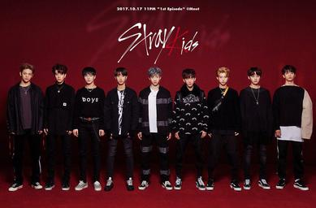

¿QUIÉNES SON?
Stray Kids (스트레이 키즈) es un grupo surcoreano de ocho integrantes formado por JYP Entertainment a través de un reality show de supervivencia en 2017.
Debutaron oficialmente el 25 de marzo de 2018 con el mini álbum "I am NOT".
Desde entonces han construido uno de los universos musicales más complejos y creativos del K-pop moderno.
Lo que los diferencia de otros grupos es su capacidad de autoproducción.
Su unidad interna 3RACHA (Bang Chan, Changbin y Han) escribe, compone y produce la mayor parte de su música,
haciendo de Stray Kids un grupo verdaderamente independiente en su visión artística.
Su música mezcla géneros como el hip-hop, dubstep, heavy metal, EDM y dance-pop,
creando un sonido oscuro y experimental que ellos mismos definen como "el género Stray Kids".
|

Stray Kids — JYP Entertainment, 2018
|